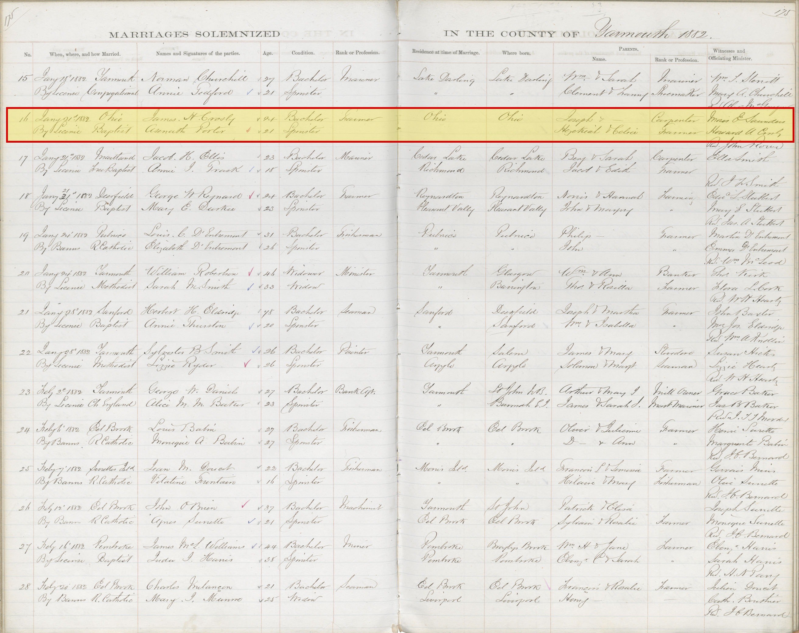
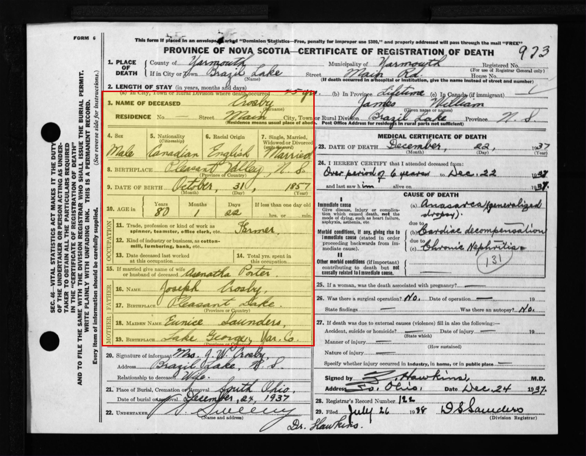
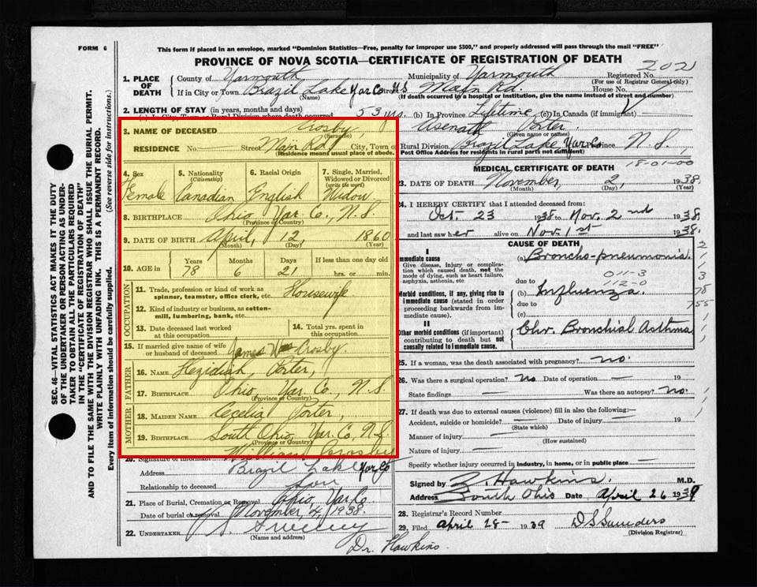
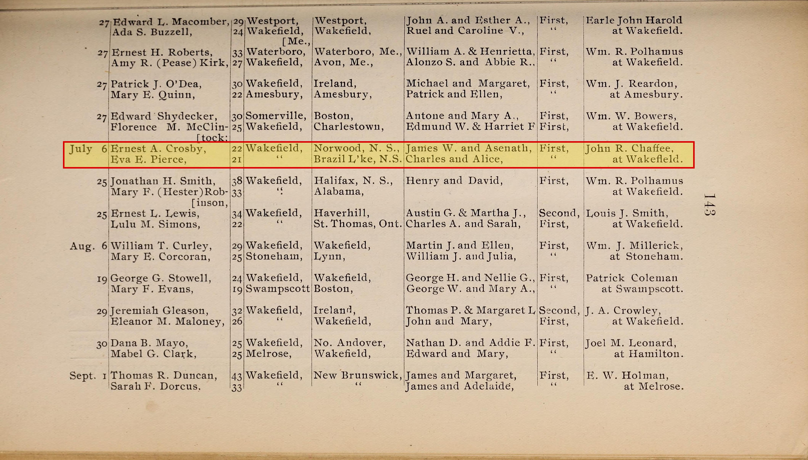
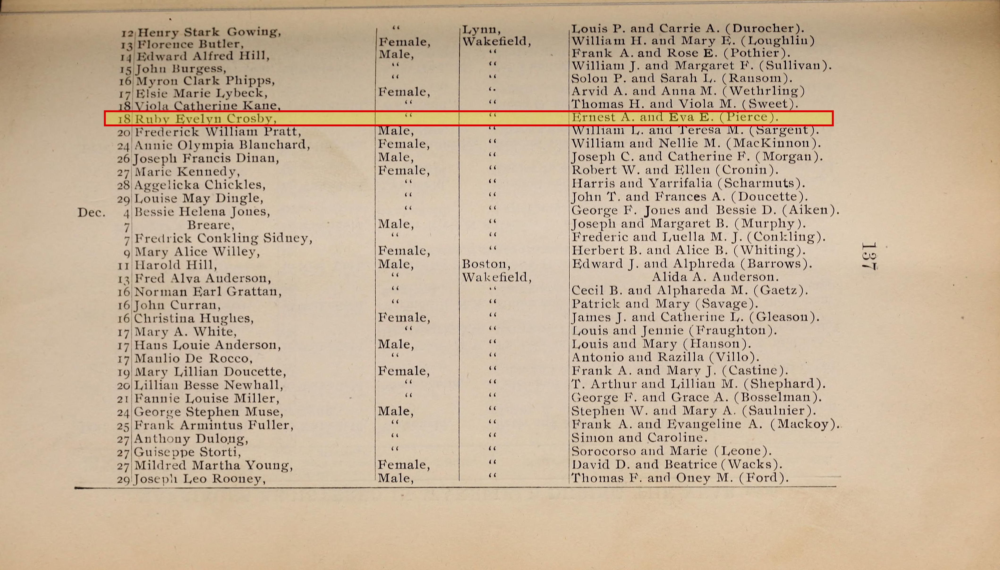
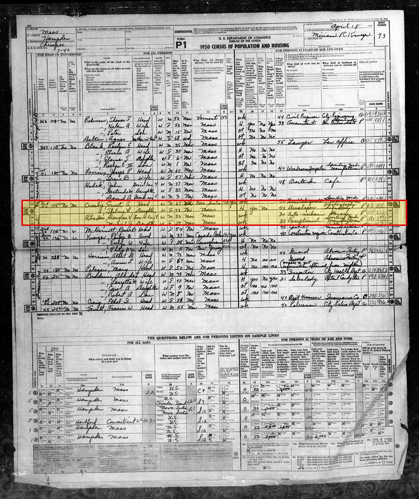

Crosby, Pierce and Porter
The Crosbys
Ernest A. Crosby came from Yarmouth County, Nova Scotia. His parents were James William Crosby and Asenath (Porter) Crosby. He married Eva E. Pierce, from Brazil Lake in the same county, at Wakefield, Massachusetts, in 1906.
James William Crosby and Asenath Porter
James William Crosby was born at Pleasant Valley, Yarmouth County, on October 31, 1857. His 1937 death registration names his parents as Joseph Crosby and Eunice Saunders. Asenath Porter was born at Ohio, in the same county, on April 12, 1860. Her 1938 death registration names her parents as Hezekiah Porter and Celia Porter. Those four parents are on the tree with dashed lines: a death registration names them, and no earlier record of their own lives has been found.
James and Asenath married at Ohio on January 21, 1882. The register index reads James H. Crosby. The 1906 marriage of their son Ernest, and James's own death registration, call him James W. and James William. The couple, the county and the places agree. The initial is treated as a clerk's variant, and it is still an open point.
James died at Brazil Lake on December 22, 1937. Asenath died there on November 2, 1938. Her son William gave the information for her death record. William is not profiled here. Ernest, born at Norwood about 1884, is the son this site follows. The parent link is probable: the 1906 marriage names James W. and Asenath, and a census of the Nova Scotia household has not been seen.



Ernest and Eva
On July 6, 1906, at Wakefield, Massachusetts, Ernest A. Crosby, 22, of Norwood, Nova Scotia, married Eva E. Pierce, 21, of Brazil Lake. The town's printed register names his parents as James W. and Asenath, and hers as Charles and Alice. John R. Chaffee performed the marriage. Their daughter Ruby Evelyn was born at Wakefield on November 18, 1906.
Charles Pierce and Alice Pierce are on the tree as Eva's parents, with a dashed line, because the 1906 register names them and nothing earlier has been proved. A possible 1865 marriage is only a lead. It is on the research page, not here.
Eva died in 1944. In 1950 Ernest, 65, a widower born in Nova Scotia, was still in Chicopee with his daughter Thelma and with his daughter Muriel and her husband at the time, Douglas Rhodes. Ernest died in 1958. He and Eva are buried at Hillcrest Park Cemetery in Springfield. The cemetery pins are approximate.
Ernest and Eva's children included Esther, Ruby, Winston, Ivoline, Thelma, Gordon, Muriel, Roy and Bernard. Ruby, Thelma, Muriel, Roy and Bernard are profiled. The others are named from the family record and are not given dates or places here.



Roy and Dorothy, and their brothers and sisters
Roy E. Crosby was born in Chicopee on February 25, 1925, a son of Ernest and Eva. In the Second World War he served in the U.S. Navy aboard the escort carrier Marcus Island and was at the Battle of Leyte Gulf in October 1944. He married Dorothy R. (Richardson) Crosby. In 1950 they moved to West Springfield. Roy worked as a pressman for the Springfield Newspapers and later as an HVAC technician at Western New England College. He died at home on May 2, 2014, and was buried with military honors at the Massachusetts Veterans Memorial Cemetery in Agawam. Dorothy, born in Chicopee on October 24, 1928, died in February 2022 and was interred with him. Her own family is on the Richardson page.
Their children are Robert, Debra, Rick and Lynn. Rick is Richard "Rick" R. Crosby, on this tree. Robert, Debra and Lynn are named only, with no dates, places or spouses. The question of Rick's recorded name is on the research page and not here.
Muriel J. (Crosby) Strauss was born in Chicopee on March 2, 1921. The 1950 census lists her as Ernest's daughter. She later married Leonard N. Strauss and died on October 20, 2013. Thelma L. Crosby, born in 1916, was in her father's household in 1950, died in 1991, and is buried at Hillcrest Park Cemetery. Bernard M. "Mel" Crosby was born in Chicopee on June 17, 1926, married Beatrice A. (Patterson) Crosby on June 26, 1948, lived in West Springfield, and died on November 14, 2024. Beatrice was born in Chicopee on April 6, 1929, to William and Charlotte (Smyth) Patterson, and died at home in West Springfield on September 23, 2018.
Family tradition, from Roy and Dorothy's obituaries: they were lifelong Yankees fans and kept a summer home on Otis Reservoir. Otis Reservoir is not in the place table, so it is not on the map.